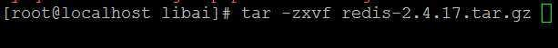

nosql数据库中之redis数据库
一、nosql介绍
NoSQL ,（Not Only SQL），泛指非关系型数据库。是一项全新的数据库革命性运动;
Nosql特点:
- NoSQL 通常是以key-value形式存储，
- 不支持SQL语句，
- 没有表结构
二、 redis介绍
redis是一个开源的，先进的key-value存储。它通常被称为数据结构服务器，因为键值可以包含字符串，哈希，链表，集合和有序集合。
三、安装
（2）解压软件，

（3）进入解压目录
（4）直接make进行编译，无需configure
（5）执行安装
注意：在安装时，该软件可以指定安装目录
makePREFIX=/usr/local/redisinstall
安装完成后，进入到安装目录
redis-benchmark性能测试，redis-check-aof，redis-check-dump日志检测工具，redis-cli客户端连接命令，redis-server服务端启动命令
（6）在解压目录里面把配置文件拷贝到redis的安装目录里面。

（7）启动redis的服务器
语法：
/usr/local/redis/bin/redis-server /usr/local/redis/redis.conf
出现如下内容：则证明已经启动成功，但是，启动信息占据了当前终端。

解决让redis在后台运行，不占据当前终端
使用vi 编辑器打开redis的配置文件，

默认为no改为yes,让redis在后台运行，

修改完成后，要关闭redis服务，重启。
关闭redis的服务：
语法：pkill redis-server
重启启动redis服务

redis的服务默认端口是6379，
可以通过netstat–tunpl | grep 6379查看redis的服务是否启动成功。
（8）客户端连接redis的服务
语法：
/usr/local/redis-cli

测试应用：

四、redis的数据类型讲解
1、string类型
String是最简单的类型，一个key对应一个Value，String类型是二进制安全的。Redis的string可以包含任何数据，比如jpg图片或者序列化的对象。
set
设置键值：
语法：set 键名值

注意：如果键名已经存在，则会覆盖原来的值。

get
获取键值
语法：get 键名
setnx
设置键值，
语法：setnx键名值
注意：在设置键值时，如果键名已经存在，则设置不成功。

setex
设置键值
语法：setex键名有效期值
在设置键值时，设置一个有效期，

mset
一次性可以设置多个键值
语法：
mset键名1 值1 键名2 值2……………

msetnx
一次性设置多个键值，要判断如果键名已经存在，则设置失败。
msetnx键名1 值1 键名2 值2……………

getset
返回旧值，设置新值
语法：getset键名新值

strlen
返回值的长度
语法：strlen键名

getrange
获取键值的子内容
语法：getrange键名开始位置结束位置
注意：位置是从开始计算的。
案例：获取name键值的前4个字符
getrange name 0 3

mget
一次获取多个键值。
语法：mget键名1 键名2

incr
自增操作，每执行一次自动加1
语法：incr键名

incrby
可以加指定值，返回计算后的值。
语法：incrby键名加的值

decr
同incr一样，自减操作。
decrby
指定减去的值。
append
追加字符串
语法：
append 键名追加的内容

2、哈希类型
hashes类型及操作
Redis hash是一个string类型的field和value的映射表。它的添加、删除操作都是0（1）（平均）。hash特别适合用于存储对象。相较于将对象的每个字段存成单个string类型。将一个对象存储在hash类型中会占用更少的内存，并且可以更方便的存取整个对象

hset
设置哈希键值
语法：hset key(哈希的名称) field value

hget
获取哈希的内容
语法：hget key(哈希的名称) field

注意：如果哈希的field已经存在，则会覆盖。

hsetnx
在设置哈希的 field 时，要检测field是否存在，如果存在则设置不成功。

hmset
一次性可以设置多个哈希的field,value
语法：hmset key(哈希的名称) field1 value1 field1 value2

hmget
一次性可以获取哈希的多个 field 的值。
语法：hmget key(哈希的名称) field1 field2

hincrby
设置哈希里面 field的值加指定的数值。
语法：hincrby key field number(加的数值)

hexists
测试哈希里面field是否存在，
语法：hexists key field

hdel
删除哈希里面的field的内容
语法：hdel key field

hkeys
返回哈希里面所有的field
语法：hkeys key

hvals
返回哈希里面所有的field的值。
语法：hvals key

hgetall
返回哈希里面所有的 field和value

3、lists类型及操作
list是一个链表结构，主要功能是push、pop、获取一个范围的所有值等等，操作中key 理解为链表的名字。redis的list类型其实就是一个每个子元素都是string 类型的双向链表。我们可以通过push、pop操作从链表的头部或者尾部添加删除元素，这样list即可以作为栈，又可以作为队列。
lpush
从头部向链表里面添加数据（字符串类型）
语法：lpush key

lrange
取出链表里面的元素
语法：lrange key 开始位置结束位置，
取出链表里面的全部内容：
lrange key 0 -1

rpush
从尾部向链表里面添加数据（字符串类型）
语法：rpush key
linsert
在链表里指定的位置添加元素。

比如：在two元素的前面添加一个元素（xiaogang）
语法：linsert key before tow xiaogang

lset
修改链表里面的元素内容
语法：lset key 元素的位置（从0开始）新的值
比如：把list1里面的xiaogang改成dagang.

ltrim
保留链表中指定范围的元素
语法：ltrim key 开始位置结束位置
比如：只保留dagang和two两个元素。

lpop
从头部删除链表中的元素，返回删除的元素
语法：lpop key

rpop
从尾部删除链表中的元素，返回删除的元素
lindex
返回指定位置的元素
语法：lindex key 位置

llen
相当于lsize
返回链表中元素的个数

4、set（集合）类型
set是集合，和我们数学中的集合概念相似，对集合的操作有添加删除元素，有对多个集合求交并差等操作。操作中key理解为集合的名字。
sadd
向集合里面添加元素
语法：sadd key(集合的名称) 元素1 元素2

smembers
获取集合里面的元素
语法：smembers key

srem
删除集合里面指定元素
语法：srem key 指定的元素

spop
随机删除集合里面某个元素，返回该元素
语法：
spop key

sdiff
求集合里面的差集，第一个集合里面不存在于另外集合里面的元素。
语法：sdiff集合1 集合2

sdiffstore
求集合里面的差集即（第一个集合里面不存在于另外集合里面的元素）并保存到新的集合里面。
语法：sdiffstore新的集合集合1 集合2

sinter
返回集合交集，即在集合1和集合2都存在的元素。

sinterstore
返回集合交集，即在集合1和集合2都存在的元素。取出交集并存储到新的集合。
sunion
返回集合的并集，即多个集合里面的全部元素
语法：sunion key1 key2

sunionstore
求得并集并存储到新的集合
smove
把元素从第一个集合里面移动到另外的集合里面
语法：smove key1 key2 移动的元素

scard
返回集合中元素的个数
语法：scard key

sismember
检测某个元素是否在集合中
语法：sismember key 元素

srandmember
随机返回集合里面的某个元素，但是并不是删除。

5、sorted sets类型及操作-Zset有序
sorted set是set的一个升级版本，他在set的基础上增加了一个顺序属性，这一属性在添加修改元素的时候可以指定，每次指定后，zset会自动重新按新的值调整顺序。可以理解为有两列的mysql表，一列存value,一列存顺序。操作中的key理解为zset的名字

zadd
向有序集合里面添加元素
语法：zadd key(有序集合名称) score1 元素1 score2 元素2……

zrange
查看集合里面的内容,按照元素的序号，升序来显示的。
语法：zrange key 开始下标结束下标 [withscores]

zrem
删除集合中指定的元素
语法：zrem key 指定的元素

zrank
在集合中，返回指定元素的下标。（安装元素的序号升序）

zrevrank
在集合中，返回指定元素的下标。（按照元素的序号降序）

zrevrange
查看集合里面的内容,按照元素的序号，降来显示的。

zrangebyscore
返回集合中，根据序号的范围返回元素。
语法：zrangebyscore key 开始序号结束序号
比如：返回序号在6到12的范围内的元素

zcount
返回集合中，指定序号范围内的元素的个数
比如返回序号6到12的元素的个数。
语法：
zcount key 开始序号结束序号

zcard
返回集合中元素的个数
语法：zcard key

zremrangebyrank
删除集合中，指定下标范围内容的元素。
语法：zremrangebyrank key 开始下标结束下标
比如删除下标范围0 到1的元素。


zremrangebyscore
删除集合中，指定序号范围内的元素。
语法：zremrangebyscore key 开始序号结束序号
比如删除序号4到10的元素

五、redis的其他命令
keys
查看当前数据库下面的键，一般要结合通配符使用。
比如查看当前数据下面的所有键使用keys *


exists
查看某个键是否在当前数据里面。

del
删除当前数据库下面的指定键
语法：del key1 key2 key3

expire
给一个键设置有效期，单位是秒
语法：expire key 秒数

select
选择数据库，在redis里面默认有16个数据库，编号是从0到15，默认是在0号数据库里面。
语法:select 数据库编号

move
将当前数据库中的key转移到其他数据库中。
语法move key 数据库编号

persist key
把key的有效期设置为永久有效，和expire命令对应。

randomkey
随机返回一个键

type
返回键的数据类型。

dbsize
返回当前数据库键的个数

info
查看redis服务器的一些信息：

flushdb删除当前选择数据库中的所有key

flushall删除所有数据库中的所有key

六、redis安全性（客户端连接验证）
（1）通过修改配置文件进行设置密码
vi redis.conf

设置登录服务器端的密码

设置完成后，要重启启动redis服务。

（2）客户端连接redis时需要验证，
验证方式有两种：
第一种：在连接客户端时，使用-a 选项来完成连接
语法： /usr/local/redis/bin/redis-cli -a 密码

第二种：通过客户端登录后，使用auth 密码进行验证。
登录后，如果没有经过验证，则会出现如下的提示；

语法：在客户端登陆后：输入 auth 密码

七、redis持久化机制
redis是一个支持持久化的内存数据库，也就是说redis需要经常将内存中的数据同步到硬盘来保证持久化，这样服务器断电、或重启系统服务器，数据还会从硬盘里边恢复到内存里。
redis支持两种持久化方式：
（1）snapshotting(快照)默认方式
（2）append-only file( 缩写aof)的方式
1、snapshotting(快照)
快照是默认的持久化方式。这种方式是将内存中数据以快照的方式写入到二进制文件中，默认的文件名为dump.rdb.
快照是默认的持久化方式。这种方式是将内存中数据以快照的方式写入到二进制文件中，默认的文件名为dump.rdb.可以通过配置设置自动做快照持久化的方式。我们可以配置redis在n秒内如果超过m个key修改就自动做快照

save 900 1 #刷新快照到硬盘中，必须满足两者要求才会触发，即900秒之后至少1个关键字发生变化。
save 300 10 #必须是300秒之后至少10个关键字发生变化。
save 60 10000 #必须是60秒之后至少10000个关键字发生变化。（以上3个选项都屏蔽，则rdb禁用）
stop-writes-on-bgsave-error yes #后台存储错误停止写。
rdbcompression yes #使用LZF压缩rdb文件。
rdbchecksum yes #存储和加载rdb文件时校验。
dbfilename dump.rdb #设置rdb文件名。
dir ./ #设置工作目录，rdb文件会写入该目录。
bgsave 手动保存
2、持久化机制之aof方式
aof比快照方式有更好的持久化性，是由于在使用aof时，redis会将每一个收到的写命令都通过write函数追加到文件中，当redis重启时会通过重新执行文件中保存的写命令来在内存中重建整个数据库的内容。
（1）如何开启：
打开配置文件：
appendonly yes //启用aof持久化方式，默认为no，改为yes,开启aof
appendfilename appendonly.aof //保存命令的文件，指定aof文件的保存

# appendfsync always //每次收到写命令就立即强制写入磁盘，最慢的，但是保证完全的持久化，不推荐使用。
appendfsync everysec //每秒钟强制写入磁盘一次，在性能和持久化方面做了很好的折中，推荐
# appendfsync no //完全依赖os，性能最好,持久化没保证

（2）aof文件的重写
ao f文件的重新，就是把文件中内容，逆化成命令存储。
比如：10次incr age 转成 set age 14 一条命令
可以执行手动重写：bgrewriteaof
重写前：

执行重写后：


查看aof文件内容：

八、php操作redis
如果php远程无法连接redis，则有3个解决方法http://blog.csdn.net/xiayuzhihou/article/details/53106409
Fatal error: Uncaught exception 'RedisException' with message 'Redis server went away'
1、redis bind 设置为127.0.0.1 即只允许本机访问。 修改redis.conf 默认配置文件 bind 0.0.0.0
1、安装redis扩展，
（1）查看php的版本和vc几编译的，是TS的还是NTS的。

（2）准备和php版本对应扩展文件，

注意：在5.4系列是有两个扩展文件的，

（3）把对应的扩展文件拷贝到php的安装目录下面的 ext目录里面。

（4）打开php.ini 文件，引入扩展。

重新启动apache 服务器即可。
注意：如果php的版本是5.4系列的，要拷贝两个扩展文件，在 php.ini 文件中引入时，是有顺序的。
注意：extension=php_igbinary.dll一定要放在extension=php_redis.dll的前面，否则此扩展不会生效。
（5）测试是否安装成功，可以通过phpinfo函数。

2、使用php操作redis
$redis = new Redis();//实例化一个对象
$redis->connect(ip地址,端口);//连接服务器
$redis->auth();//输入验证密码


九、高级案例：
用户的注册
用户的登录
用户的列表（分页显示，删除，修改的功能）
用户添加关注，
用户的注册
如何存储用户的信息，
姓名年龄密码 email
xiaogang 12 12345 xiaogang@sohu.com
构造哈希的键：
注册的第一个用户的键： user:id:001
存储用户信息：$redis->hmset('user:id:001',array('id'=>001,'username'=>$username))
注册的第二个用户的键： user:id:002
存储用户信息：$redis->hmset('user:id:002',array('id'=>002,'username'=>$username))